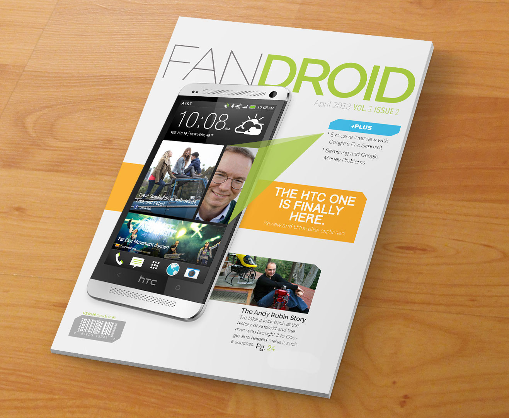

fAndroid Magazine
fAndroid Magazine PDFLooking at the current tech magazines, besides wired, most of them are not well designed and deliever up the important news and happenings but only to those who care enough to sort through it. The goal with this magazine I created was to focus on tech but present it in a way that would be more appealing to those who might not be die hard tech fans. This particular magazine focuses on the Android operating system but not just on phones and tablets but in glass, nvidia shield and any others that may come down the road.
